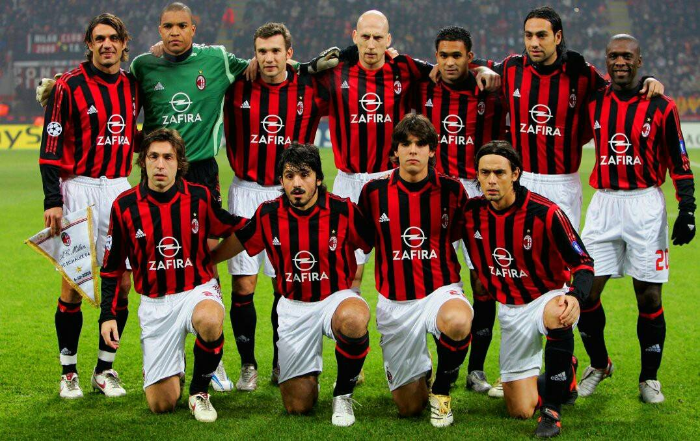

Merhaba.Ben Muharrem Demirel.İstanbul'da yaşıyorum.22 yaşındayım.Malatya İnönü Üniversitesinde eğitim görmekteyim.
1.Müzik
2.Kitap:
3.Film:
Futbol, on birer oyuncudan oluşan iki takım arasında, kendine özgü küresel bir topla oynanan takım sporudur. 21. yüzyıl itibarıyla 200'ün üzerinde ülkede 250 milyonu aşkın oyuncu tarafından oynanmakta olup dünyadaki en popüler spordur.
Milan (2005) efsane kadrosu... Dida, Serginho, Nesta, Stam, Maldini, Gattuso, Pirlo, Seedorf, Kaka, Inzaghi, Shevchenko.
Masa tenisi (pinpon), iki veya dört oyuncunun birbirlerine topu karşılıklı olarak attığı ortasında ağ bulunan masanın üstünde oynanan bir oyundur.
İskender kebap veya iskender döner, Bursa yöresinin meşhur kebap yemeklerinden biridir. 1867 yılında Kayhan Çarşısı'nda başlamıştır. Aslında temel malzemesi döner olsa da iskenderi iskender yapan, üstündeki tereyağ, domates sosu, yanındaki yoğurt ve altındaki yağlı pide parçalarıdır. Ayrıca iskenderin eti herhangi bir dönerin etinden farklıdır. İskender kebabının yapıldığı et, Uludağ kekiği ile beslenen koçlardan elde edilir.